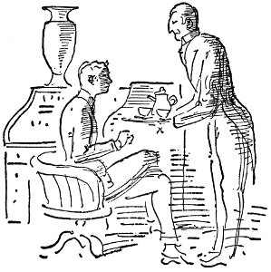
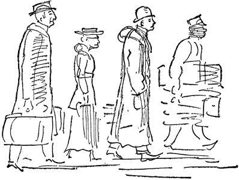
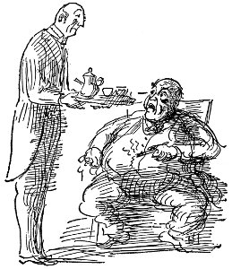

patronlara, “Yurdum Güzel Yurdum” çalınırken ışıklar söndü düşük ücretler huzursuzluğa neden oluyor, kadın dedi
Bir kız var Maryland'in yüreğinde
Benim olan yüreğiyle
ya büyük bir savaş istiyor ya hiç istemiyor
Paris at yarışı alanlarında çok ilgi çekici kişiliklerden birini oluşturan manken kız, yeniliklere önayak olma konusunda kendisiyle yarışıyor. En şaşırtıcı giysileri sırtına geçirip tam bir soğukkanlılıkla dolaşıyor. Sebatsızlık onun kilit sözcüğü
Yakınlardan geçen üç Alman Subayı ellerini sıkmakta direnen coşkulu kalabalığın neredeyse saldırısına uğruyordu
kızın giysisi kibritten alev aldı, yanarak öldü
Mary-land'im
Hayaller ülkesiydin
Dediğinde benim olacaktır
tuna ırmağı'nda ilk çatışma belirtileri görüldü
Bütün aklı başında kadınlar gibi, ben de ölüm cezasına karşıyım. Herhangi bir kadının asılacağı düşüncesi bana iğrenç geliyor. Devletin adam öldürmesi korkunç bir şey
çar'ın avusturya karşısında sabrı tükendi
Carlsbad'dan çıkışta panik binbaşının ortadan yok oluşu uzun bir toplu kıyım dizisinin ipuçlarını veriyor güpegündüz açık saçık giysiler, içinde bulundukları gemiyle hiçbir biçimde ilgisi olmayan iç çamaşırı benzeri şeyler Bundan sonra ne giyecekler?Paris bağırıyor şarkıcı oğlanlar kamp yapıyor profesör ormanda gezintiye çıkıyor Belgrad Düştü
genel savaş yaklaşıyor
katil, milletvekili jaures'i öldürdü
öldükten sonra iki saat daha yaşadı
Garros öldüğünde bir arkadaşı, bir dostu yitirdim, ama bu savaş bitene dek bu işte daha pek çok arkadaşımı yitireceğimi sanıyorum
kayıp sandıklar londra'da ortaya çıktı
ne tür olursa olsun görenekler, yazın bu iç bayıltıcı durgun günlerinde kaçınılmaz olarak çiğneniyor veya bir yana bırakılıyor ve şu andaki gevşeklik yüzünden, sosyeteye girme törenlerinin yapılmasına daha birkaç mevsimlik zamanı olması gereken gençler epeyce
sahte papa da öldü
İngiltere önemli miktarda Virginia tütününü özellikle Avrupa'daki İngiliz birliklerinin kullanması için satın alacak
Bir kız var Maryland'in yüreğinde
Benim olan yüreğiyle
Barış Prensi
Andrew Carnegie
İskoçya'da Dunfermline'da doğdu
Amerika'ya geldi göçmen
gemisiyle tekstil fabrikasında bobinci çocuktu
kazanların altını yaktı
bobin fabrikasında kâtipti haftada 2.50 dolara
telgraf dağıtmak için Philadelphia'da koşturdu
Mors alfabesini öğrendi Pennsy hattında telgraf memuruydu
iç savaşta askeri telgraf memuruydu
hep biriktirdi parasını;
ne zaman eline bir dolar geçse hemen bir yere yatırdı.
Andrew Carnegie, ansızın fiyatları düşünce Adams Express, Puliman hisse senetleri aldı;
demiryollarına güveniyordu,
haberleşmeye güveniyordu,
taşımacılığa güveniyordu,
demire güveniyordu.
Andrew Carnegie demire inanıyordu, köprüler yaptı, Bessemer fabrikalarını, yüksek fırınları, hadde fabrikalarını kurdu;
Andrew Carnegie petrole inanıyordu;
Andrew Carnegie çeliğe inanıyordu;
hep biriktirdi parasını
ne zaman eline bir milyon dolar geçse hemen yatırım yaptı.
Andrew Carnegie yeryüzünün en varlıklı adamı oldu, öldü.
Bessemer Duquesne Rankin Pittsburgh Bethlehem Gary
Andrew Carnegie milyonlar döktü barış için
kitaplıklar, bilim enstitüleri, vakıflar yoksullara yardım için
ne zaman bir milyar dolar kazansa bir enstitü açtı evrensel
barışa katkıda bulunmak için
her zaman
savaş çağı dışında.
Sine-göz (22)
bütün hafta sis yapışıp kaldı denize kayalıklara öğle zamanı sisten süzülen azıcık güneş ancak ısıtıyordu tahta parmaklıklara kurusun diye serdiğimiz morina balıklarını gri tahta parmaklıklar yeşil deniz gri evler beyaz sis öğle zamanı ancak olduracak kadar güneş vardı çitlembikleri ahlatları kırlarda ısıtıcak kadar mum ağaçlarını trioptorisleri o kiralık evde öğlen zamanları herkes radyonun başında beklerdi radyoda çalışanlar yemek bile yiyemezlerdi evet savaş vardı
Biz de savaşa girecek miyiz? İngiltere girecek mi?
Anlaşmadaki Yükümlülüklerimize göre . . . elçiye pasaportunu verdi her sabah morina balığını tahta parmaklıklar üzerinde dışarı serdiler sisten süzülen azıcık güneş ışığında bile
uzaklarda düdüğünü çalan gemi iskele kazıklarına karşı kucağını açmış deniz yosunlu kayalıklar boyunca martıların çığlıkları kiralık ev bulaşıklarının şangırtısı
Savaş açıldı hemen . . . Kuzey Denizi'nde büyük savaş Alman Donanması yok edildi ingiliz donanması yok edildi alman filosu cape race açıklarında bizden yana Founlander'lılar Baskıların yerleştiği St. John kentinde liman kapatıldı.
ve her akşam tahta parmaklıklardan alıp morinayı içeri soktular kiralık evde bulaşıklar şangırdadı herkes radyo operatörlerini bekledi
rıhtımın kazıklarına karşı dalgaların kucağı bembeyaz siste çığlıklar atan dönen saldıran martılar uzaklarda düdük çalan gemi her sabah yaydılar morinaları tahta parmaklıklara
J. Ward Moorehouse
Ward, yurtdışındaki ikinci balayından döndüğünde otuz iki yaşındaydı, ama daha yaşlı görünüyordu. Sermayesi vardı, gerekli ilişkileri kurmuştu, büyük anın geldiğini hissediyordu. Temmuzdaki savaş sözleri yüzünden balayını kısa kesmeye karar vermişti. Londra'da Edgar Robbins adlı, International News hesabına Avrupa'da çalışan bir delikanlı buldu. Edgar Robbins aşırı içki düşkünüydü, kadınlar için çıldırıyordu, ama Ward'la Gertrude onu gittikleri her yere götürdüler, gizlice birbirlerine onu doğru yola getirmek istediklerini söylediler. Sonra bir gün Robbins, Ward'ı bir kıyıya çekerek frengili olduğunu, kendine çekidüzen vermesi gerektiğini anlattı. Ward bir kez daha düşünüp döner dönmez açacağı New York bürosunda çalışmasını önerdi. Gertrude'a karaciğerinin bozuk olduğunu söylediler, o da ne zaman içki içerken görse Robbins'i çocukmuş gibi azarladı. Amerika'ya gemiyle dönerlerken onun ikisine de iyice bağlanmış olduğunu gördüler. Bundan sonra da Ward'ın yazı yazmasına gerek kalmadı, tüm zamanını işi örgütlemeye ayırabildi. Yaşlı Mrs. Staple'ı kandırarak bu işe elli bin dolar yatırmasını sağlamışlardı. Ward 100. Cadde'de işyeri kiraladı, Çin porseleni vazolarla, Vantine'den alınma emaye küllüklerle döşedi, kendi odasına da kaplan postu serdi. Her öğleden sonra İngiliz usulü çay dağıttırdı. Telefon rehberine J. Ward Moorehouse, Halkla İlişkiler Danışmanı, diye yazdırdı adını, Robbins sağa sola yollanacak yazıları yazarken o da ilişkilerini tazelemek için Pittsburgh'a, Chicago'ya, Bethlehem'e, Philadelphia'ya gitti.

Philadelphia'da, Bellevue Stratford Oteli'nin giriş salonuna doğru yürürken Annabelle Marie'yle karşılaştı. Kadın onu sevimli havalara bürünerek kutladı, yaptıklarını, reklamcılık işindeki başarılarını duyduğunu söyledi, birlikte yemek yediler, eski günlerden konuştular. Annabelle sürekli, “Hiç kuşkusuz kendini çok geliştirmişsin,” diyordu. Ward onun boşandığına biraz yerindiğini görebiliyor, ama kendisinin aynı şeyi söyleyemeyeceğini hissediyordu. Yüzündeki çizgiler derinleşmiş, cümlelerini yarım bırakır olmuş, sesine papağan çığlığını andırır bir tını gelmişti. Yüzünü aşırı boyamıştı, Ward onun uyuşturucu kullandığından kuşkulandı. Sonradan eşcinsel eğilimleri ortaya çıkan Beale'den boşanmaya çalışıyordu. Ward da kuru bir sesle yeniden evlendiğini, çok mutlu olduğunu söyledi. “Staple servetine sırtını dayayan kim mutlu olmaz ki?” dedi kadın. Ondaki belirsiz sahiplenme havası Ward'ı irkiltti, yapacak işleri olduğunu söyleyerek yemekten sonra hemen ayrılmak istedi oradan. Annabelle başını yana eğerek yarı kapalı gözlerle bakıp, “Sana bol şans dilerim,” dedi, gıdaklamaya benzer tiz kahkahalar atarak otelin asansörüne bindi.

Ertesi gün özel kompartımanda Chicago'ya doğru yola çıktı. Sekreteri Miss Rosenthal, İngiliz uşağı Morton da onunla birlikte gidiyorlardı. Solgun yüzlü, sade, akıllı bir kız olan, Ward'ın hayatını kendisine adadığını anladığı Miss Rosenthal'le birlikte özel bölmesinde yiyordu yemeklerini. Pittsburgh'da Bessemer Ürünleri'nde de birlikte çalışmışlardı. Kahvelerini bitirdiklerinde Morton ikisine de biraz konyak koyunca Miss Rosenthal kıkır kıkır gülerek sarhoş olacağını söylerken Ward yazı yazdırmaya başlıyordu. Tren tangırdıyor, sarsılıyor, arada bir kömür dumanının, önlerindeki makinenin sıcak yağlı buhar bulaşığı bedeninin, karanlık Apalaş Dağları'nı aşan sıcak parlak çeliğin kokusu burnuna geliyordu. Duyurabilmesi için yüksek sesle konuşması gerekiyordu. Kendi sözcüklerinde unutuyordu her şeyi . . . Amerikan sanayii bir buhar makinesi gibi, bir ekspres trenin güçlü lokomotifi gibi delip geçiyor bireyci yöntemlerin gecesini . . . Buharlı motora ne gerekir? Yaratıcısının kafasıyla, bu yüksek güç ürünlerinin gelişmesini olası kılan bu işe para yatıranın ortak çalışması, eşgüdümü, sermayenin eşgüdümü, akıllıca yönetilen kredi biçimine dönüştürülmüş insan türünün birikmiş enerjisi . . . emek, büyük şirketlerde toplanmış sermayenin, görülmemiş olanaklara kavuşmuş, varlıklı, doyum bulmuş Amerikalı isçilere sefertasını ağzına kadar doldurup vermesi; ucuz taşımacılık, sigorta, daha az çalışma saati . . . yeryüzünün el değmemiş köşelerine kadar, uzun, trajik insanlık tarihinin, insan bilgisinin sınırları içindeki hiçbir anında eşi görülmedik rahatlık, bolluk.
Artık sesinin kısıldığını anladığından yazı yazdırmayı kesmesi gerekiyordu. Miss Rosenthal'i yatmaya gönderdi, kendisi de yattı, ama uyuyamıyordu. Sözcükler, düşünceler, tasarılar, başkalarından alıntılar sonsuz bir kayıt aracından çözülüp duruyordu kafasının içine.
Ertesi gün LaSalle'da Yargıç Bowie C. Planet onu aradı. Ward oturmuş gelmesini beklerken Michigan Gölü rengindeki gökyüzünün uçuk mavisine bakıyordu. Elinde tuttuğu küçük dosyalama kartında şunlar yazılıydı:
Planet, Bowie C . . . Tennessee, Yargıç, Elsie Wilson Denver'le evli; küçük bakır ve kurşun yatırımları . . . Anaconda Madenleri? Talihsiz petrol spekülatörü . . . Illinois Eyaleti'nin Springfield kentindeki Planet ve Wilson hukuk bürosunun ortağı.
Kapı çalındığında, “Peki, Miss Rosenthal,” dedi. Kız dosyalama kartıyla öteki odaya geçti.
Morton kapıyı açarak yuvarlak yüzlü, fötr şapkalı, ağzında purosu olan bir adamı içeri aldı.
Ward ayağa kalkıp elini uzatırken, “Merhaba, Sayın Yargıç,” dedi. “İşler nasıl gidiyor? Oturmaz mısınız?”
Yargıç Planet, ağır ağır girdi odaya. Ayakkabısı ayağını vuruyormuş gibi garip, yuvarlanırcasına yürüyüşü vardı. Tokalaştılar, neye uğradığını anlamadan, Yargıç Planet, Moorehouse'un masasının arkasındaki büyük pencerelerden içeri dolan çelik parlaklığında bir ışığın karşısına oturmuş buldu kendini.

Üzerinde gümüş çay takımlarının parıldadığı tepsiyle usulca yaklaşan Morton, “Çay alır mıydınız, efendim?” dedi. Yargıç öylesine şaşırmıştı ki, ayık olduğunu kendisine kanıtlamak için purosunun ucundaki uzun külü fırlak göbeğine düşürdü. Yüzü yuvarlaklığını, yumuşaklığını koruyordu. Üzerindeki bayağılığın izleri ovuşturularak silinmiş, bayağı bir adam yüzüydü bu. Yargıç, ılık, sütlü çayı yudumlar buldu kendini.